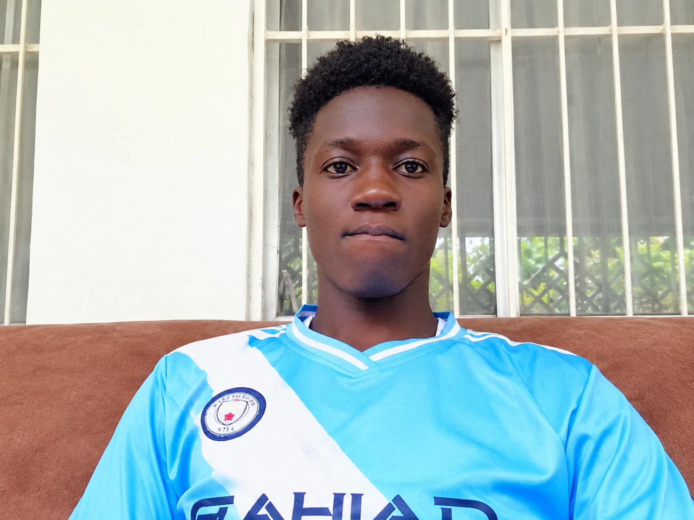

About Me
Hello! I'm Carlos Azenga, an Environmental Science student at Jomo Kenyatta University of Agriculture and Technology (JKUAT). I am interested in understanding the environment and how people can use natural resources responsibly. I enjoy learning new things, working with others and taking part in activities that keep me active and curious. My goal is to build knowledge and practical skills that can help me contribute to a cleaner and more sustainable world.
Fun fact: I can switch from a football match to a documentary and then spend the evening listening to R&B.
See my academic journeyQuick Facts
- Programme: BSc Environmental Science
- University: JKUAT
- Year of study: Year 2
- Home county: Vihiga County
- Career goal: To become an environmental professional and contribute to conservation and sustainable development.